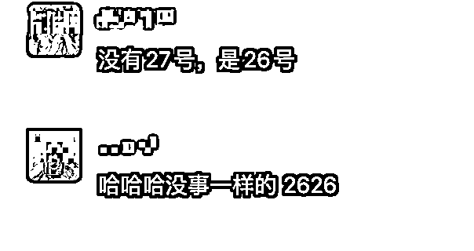

来源：https://m0f9nvch48s.feishu.cn/docx/PNFUdKsQOoJ2uKx7viIc0YkPnWd
大家好，我是林枫，目前在读大四，加入生财不到一年，还是一名生财新人。刚进生财的时候完全不知道自己要做什么项目，后面看到短剧和公众号流量主项目很火，就都尝试了一下。
两个项目都是刚开始做不到一个月就取得了正反馈，短剧项目赚了5000，公众号项目赚了2万+。不过这两个项目后面流量低的时候，都没有坚持继续做下去。
后来看到了 分享的小红书境外旅游项目，在这之前也看过很多关于旅游的文章，认为这是一个长期的项目，而且境外游一单的佣金很高，感觉做着应该心不累，就链接了老师去学习。
经过不到两个月的实践，现在取得了一些小成绩，最高的一篇笔记阅读量7万+，一篇笔记加到微信150+客户，其中有很多是五人以上一起去玩，但是一开始不会聊，踩了很多坑，可以说错失了很多潜在客户，后来通过向老师请教和自己的复盘，目前成交了三单，共5个人，利润7k+，还有一些客户在跟进中
分享复盘一下这近2个月的实操情况，展示一下部分的成绩：
刚开始做的时候，我对旅游可以说完全没有认知，自己也没报团去旅游过，更别说境外了，当时我连护照和签证都不知道是干什么的。只能一步一步的学，去了解出国的过程，还好当时有教程，里面这些问题都有提到，然后我就一步一步的去做，引流到第一个微信的时候很高兴，聊天的时候特别的热情，生怕失去了这个客户，结果客户问我什么时候办护照，而我当时以为护照就是签证，我说报团不需要自己去办护照，我们会帮你办团签，结果客户直接不理我了，后来我把聊天记录给老师看了之后，才知道我的回复出现了问题。
后面只要我不懂的问题就直接截图问了，聊的越来越多，我才对出境游的一些流程有了全面的了解。
后来我加了几十个微信，直到成交了第一单，我的第一单是一个男生，没有聊太多，他只是看了下团的时间很符合，就想要报名了。成交后，我还是继续做，但是聊了好多个也没有出第二单。成交这一单或许是我的运气好，遇到了没有太多要求的客户。
后面我开始反思，为什么加了那么多，才成交了一个
后来看了老师分享的其他人沟通案例，我发现我的聊天太生硬了，没有任何技巧，客户问一句我就答一句，我也不会有其他的解释，而且我是男生，当时连那种语气词，表情包之类的都不会发。
意识到之后我就开始有意识的锻炼这方面了，后来我边聊边总结经验，还经常把聊天记录发给老师去提建议，到现在有了一些自己的方法论。
关于小红书境外旅游这块，具体的玩法我就不再说了，之前 老师那边已经星球里分享过很详细的 SOP 了（《高客单出境游，万字保姆级 SOP 教程，手把手带着做》），大家可以直接看他那篇帖子跟着做就好。
今天我主要分享一下我微信沟通的时候，怎么更容易成交，有哪些沟通技巧 ！
沟通就是给客户建立认知，以及建立信任的过程
建立哪些认知呢？对团的认知和对我们的认知
可以通过笔记的内容，沟通的过程，朋友圈打造去让用户建立认知，信任
如果没有建立这些认知，也不是我们的目标客户
例如：有些客户想报名新西兰团，但是只有一两万预算，而正常新西兰团都是3w左右
我们要让他知道新西兰是澳洲里面比较贵的国家，现在还是新西兰旅游旺季，所以价格偏高，整个市场都是这个价格
我们要让客户知道，我们懂她，人靠谱，旅行社靠谱
建立认知后的结果就是让客户觉得我们给她推荐的团适合她，而且我们人也靠谱，有安全保障，这样客户大概率会选择我们！
我们要少给客人传递否定的，不能的，不行的这方面的内容，就算是真不能得也得有其他的方式委婉表达
比如客户想报名三国的团，三个国家的价格不同，
我们的优势是价格贵的国家的时间长，缺点是有一些餐没有包括，那怎么说：
这个团中间有一两天是包两餐，有一餐是留给你们自己体验的，因为说实话这个团就是主打高体验的，是同价位中最高性价比的，最主要是它敢xx深度
很多同类团xx地方只玩一天，而xx地方是这里面最贵的国家，我们这个团有四天
这样一说，即说明了优势，又把缺点转为了优势
旅行社那么多，她为什么要和你聊，我们要有差异化，我之前加了很多同行，假装想报团，实则想看看他们的话术，
发现大部分旅行社的客服其实都没什么技巧，营销感，客服感比较强，有的甚至没经过同意，直接给我语音。
我们如果这方面做的更好一点，肯定比传统旅行社的销售强！
专业且有温度。不要让对方觉得你就是一个推销的，说白了，市面上那么多选择我为什么要找你买，那肯定是你有特别之处，最好让对方认可你这个人。
我们要共情客户，让她觉得你懂她，能站在客户的 角度去思考问题
比如客户从小就想去欧洲的几个国家，但是其中某个国家冬天的时候天气冷，都是雪，客户不那么喜欢，喜欢夏天的那种绿色的环境，我们可以共情用户，说确实是这样，我自己也不喜欢都是雪的那种环境，但是既然你很喜欢这个地方，可以考虑夏天专门来这个地方深度游，这次就去其他的几个欧洲国家玩
这位客户的孩子是高中学生，想寒假带着出国玩一玩，但是因为办签证按指纹的时间正好是孩子上课的时间，不想耽误孩子课程，有些纠结，我们怎么说呢？
如果不去共情，直接说大使馆周末不开门，只能工作日去办，也可以，但是共情了会更好
（右图只是例子，还可以说的更好）
当我们加到客户微信之后，首先了解基本信息：
建议一问一答，问题也可以稍微白话一点。
您好，是了解出境游嘛
准备去哪里玩呀？
准备什么时候去呀？（一定是具体的几号到几号）
几个人去玩呀？
你们准备从哪里出发呢？
（以上这些问题都是为了找到匹配客人需求的产品
当我们了解完他的具体信息之后，可以整理一下发给客户，
一方面让他觉得我们专业和对他的重视，另一方面也是方便我们找团
比如：
意向产品：新西兰深度游
出行人数：2人
出发地点:浙江
意向出行时间:1月2-6（一定要问清楚客户出发的具体时间段）
人均预算：5万
要求:15人以下小团
一定要框住用户的需求，不要让他们发散（比如，我也不知道要去哪，可以推荐一下吗？这种用户很难成交）
如果去的方向都没计划，那我们就没有服务的意义了，发了也是白发，成交概率很低
没有具体需求的，只是针对具体景点和玩法自己不清楚，但是区域一定要弄清楚的，例如西欧，东欧，南欧，北欧，澳洲，北美等等。
发完之后，我们可以问：有什么补充的吗？
咱们这边有什么想法，可以尽可能多的提供过来，我好根据您的情况，给您匹配最合适的产品。
这样可以让客户和我们聊更多他的真实想法，想找什么样的团
当我们确定完客户的需求后，需要找旅行社的人问一些产品细节，匹配合适的团，这个时候可能需要等待一段时间，需要向客户说明清楚：
我给你匹配一下产品，然后还要和产品端确定是否有位置，可能没那么快回复你哈。因为周末，沟通效率没那么高。我一得到确切消息就来回复你😊
当我们找到了合适的团之后，可以直接推给她：
如果有部分需求没满足，需要和客户说明情况，打消他的顾虑，多说说这个团其他好的方面
要让客户理解并接受这个缺点
我们不能让客户觉得我们的团可以随便降价，如果客户对团的意向比较大，我们可以适当便宜一部分
如果客户想报15人的小团，但是我们只有20人以内的，可以说：
不好意思打扰你了，是这样的，咱们这边有这么个情况，要求15人以下的小团很多团满足不了，特别是旅游旺季，一般都是20人左右的精品团，只能说如果没有报名最终达到20个人，可能会是十几个人的团，但是这个不能100%保证。
打消客户担心人多太乱的顾虑：
一般这种接近3万的团，团友素质都是比较高的年轻人，都是注重体验的高素质人群，不会说觉得20人有点多。
所以咱们目前的情况就是能不能接受团的人数可能多一点的情况，也可能最后出团只有十几人，但是不能保证，所以要提前说一声。
（低价都含有自费，但是自费都是自愿的）
在客户看产品介绍的过程中，可以说这样一句话，让客户看完之后有问题及时问：
如果很纠结不知道选择哪个，假如客户对你已经很信任了，成交的概率大，你可以做一个对比图给他看，他看到了会更加的信任你（只是信任你还不足以成交，产品也要匹配度高才行，这就看之前你的需求挖掘怎么样和你的供应链产品多不多了）
看完你的整理，可能产品有某一小点不满意，客户很大概率也会妥协，这位顾客最后也是定了这个产品。

真想去的客人在你的热情追踪下一定会能反馈出客人的见解和问题的，哪里不合适就解决他的问题，合适的日期远的就用提前报名优惠督促她，时间近的就用余位不多办签证需要时间督促她
这样我们不会轻易丢掉客人
如果没谱的不一定去的也会在我们的追踪下能看出来她不着急不靠谱，那就不用把过多时间放在她身上去盯着有反馈的人
这样我们都不白劳动，就算不行的我们该做的到位了也不后悔。
不然一天到晚都在推行程，这个行程不行，那个行程不满意，突然又觉得欧洲不好玩，想去东南亚。
如果后面客户没回复，一定要追的紧一点，及时了解他的想法
您好，商量的怎么样啦，有什么问题可以说一下，然后我帮您参考一下哦
当客户对某一个团有意向，问了这个团的具体人数等，怎么让他尽快做决定呢？
亲爱的，晚上商量好了有结果了就先告诉我一声哈
如果不走这个团，我赶紧把位置放出来给别的销售，因为目前这个团只有4个位置了，我占两个就只有两个了。
有几种情况：
一：觉得时间还早，不那么着急：
这种情况，要让客户知道，现在是旅游旺季，有些性价比高的团，已经没有名额了，如果直接微信这样告诉他，客户会认为你在营销，对你信任度下降。
我们要怎么做呢？
二：在考虑其他旅行团的产品：
正常来说，客户报旅行团都会选择多个不同的旅行社去咨询
如果是这种情况，如果自己的供应链比较强，能拿到市面上大部分的资源，我们就有绝对的优势
要让他知道别人有的团，我们也有，并且我们是一手货源，可以给他便宜一些，有什么问题可以第一时间解决
这样或许能够挽回客户，我们后端优势就算再大，但是用户不知道就等于没有优势
现在听说我们的后端正在准备明年年初，自己去包机，单独的路线酒店，搭一个团出来，这样就在整个市场上完全是独一份，其他家也找不到，直接降维打击。
上面这位客户，后面看中了其他家的产品，我之前和她聊的很好，建立了一些信任，所以她也愿意把她在考虑的团给我参考。
因为我找的供应链也有一样的团，所以我就直接给她便宜了一些，毕竟境外团的客单价高，就算给她便宜一些，到手的利润还是会有上千的，也比不成交的好。
这位客户和她老公一起去玩，两个人一人找了几家旅行社咨询，一开始我发了一个性价比高的，但是名额比较紧张
，后面他问还有多少名额，我直接截图，说这是同事的回复（增强真实性，让客户更着急定），已经没有什么名额了，最后这个性价比高的，确实没有名额了，我又推了一个其他的团，名额充足，最终他们两个都看中了同一个团（两家不同的旅行社），但是因为我和她聊的比较好，我也强调我们这里是供应商，是一手资源，到时候直接和供应商签合同，之后出现什么问题，可以第一时间解决，更有保障。
而她老公在旅游平台找的是代理商，不是一手，所以最终选择了在我这里报名！
当客户对团的各方面都满意之后，还会问一些普遍性问题，这类问题都有标准答案，例如：
1.如果最后没成团怎么弄？
2.成团了但是日期没按照我们的来，怎么办？就是我们定的日期没成团，但是有其他日期？
3.签证没过怎么办？
如果在旅行过程中出现特殊情况导致无法继续旅行怎么办？
这些情况下定金退不退？
................
我们可以把这些问题的回复，都整理在文档里，方便到时候直接复制，例如：
签证没过怎么办？
签证按照我们的要求准备资料，团签正常来说不存在不过的。就算真的运气不好，拒签了，我们这边就收一个签证费用800，剩下的钱也会退还给你的
如果在旅行过程中出现特殊情况导致无法继续 旅行怎么办？
如果这种情况属于不可抗力那种，由于天灾等客观原因，不是旅行社造成的，所以这种不可抗力是旅行社积极给大家配合想办法，相应的费用客人也需要承担，这个是万分之一的可能。基本都用不到。而且我们是严格按照国家旅游局的合同，这个条款是旅游局监制旅游局写的不是旅行社自己写的。
如果是由于我们旅行社自己的问题，导致旅行不能继续，我们会退全款
最后要告诉客户：这些问题的解决办法都是会写在合同里的（打消客户最后的顾虑！）
这个项目大致分为四个步骤——
第一步：在小红书发旅游笔记，吸引目标客户来咨询
第二步：把客户加到微信，通过朋友圈运营持续触达，展示温度和专业
第三步：我们自己进行初步的沟通，筛选出可以成交的客户
第四步：把客户和旅行社的人拉群，在群里进行成交
我加入生财这算是第三个项目，其实我感觉做大部分项目都是类似的，
都需要自己的努力坚持和不断的学习，有很多人报了名发了两篇笔记就没有下一步动作了，变成了一个围观者，这样做什么项目也不会有成绩，遇到问题想办法解决就好了，有太多负面情绪会非常影响自己，内耗会很痛苦，反而那些积极行动的人，不会有太多心理上的痛苦，因为直接面对问题的时候，注意力在事情上，而内耗的时候是在怀疑自己！
分享我在做小红书旅游这个项目以及在生财做过的三个项目的过程中的一点经验：
我对这个项目的认知：
这个项目算是正规玩法，除了引流这一块（后续可以投流解决），其余的没有对抗平台，而且旅游的需求，会一直存在，小红书又是大部分人搜索旅游攻略的平台，随着小红书之后的发展，我相信使用这个平台的人也会越来越多，所以这个项目我认为是可以长期做的项目
后续规划：
目前已经跑通从0-1的过程，了解了这个项目的玩法，我后面准备放大收益，再多起几个号，其实如果熟练了，写笔记并不复杂，可能更花费时间的是后续的微信沟通，我现在还是大四学生，时间相对多一些，我想着先慢慢多起一两个账号，然后准备请教一下老师，怎么把流程再优化一些，效率更高，同时我也教我大三的妹妹，怎么在微信沟通这一块，后面在微信沟通这方面，让她帮助我，我也分给她一部分收益！
除了固定团这一块，之后还准备做做定制团，毕竟定制团的利润更高，一般是3人以上，一个定制团客单价超过十万，如果佣金是10%，就有1w了，一个月就算成交两单也很爽了！在之前引流固定团的时候，也来了几个想做定制的，不过没有成交，相信后面如果专门做定制团引流，会有成交的！
以上就是我在实操这个项目的时候一些想法和经验，希望大家都能跑通0-1！
以上就是我本次的分享，感谢 在项目上的细心指导
欢迎大家多交流学习，关于沟通技巧部分，后面有了新的思考，我会不断更新的。祝大家可以更快的在旅游上拿到结果。
最后真的非常感谢生财这个平台，可以让普通大学生也能接触到，除了打工之外的更多赚钱可能性，进来真的开眼了，很后悔没有早几年知道！